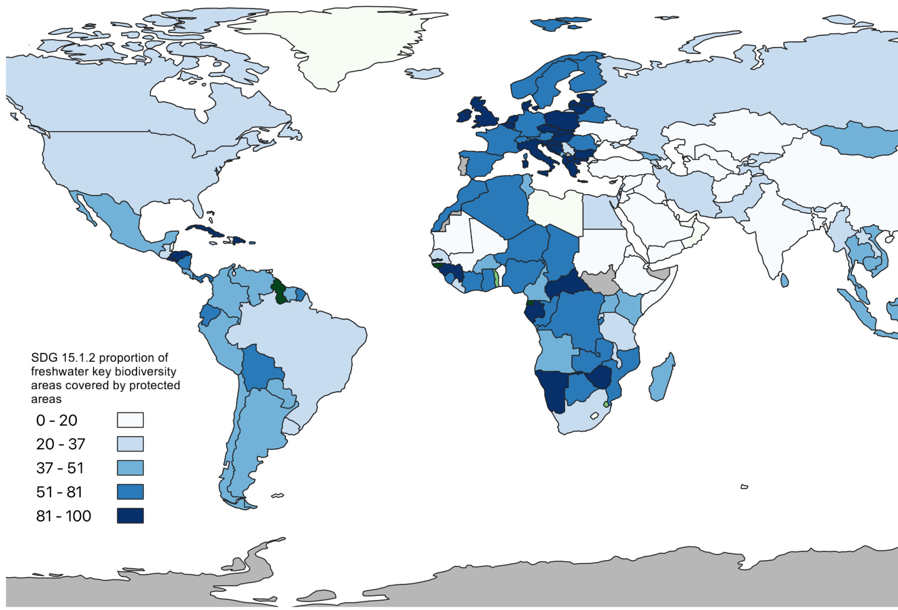

Choropleth Map
Here is the choropleth map I made with real UN SDG indicator data. This map reflects the average proportion of freshwater key biodiversity areas covered by protected areas. It is SDG 15_1_2, which refers to Life on Land.
This map was created using QGIS, and the slider below was made with ArcGIS online. On the right, the map represents SDG 15_1_1, the forrest area proportional to country size. On the left, the map pictured above wiht the average proportion of freshwater biodiversity areas. These data sets are interesting when compared to each other because of the direct correlation between availability of water and total forest area.